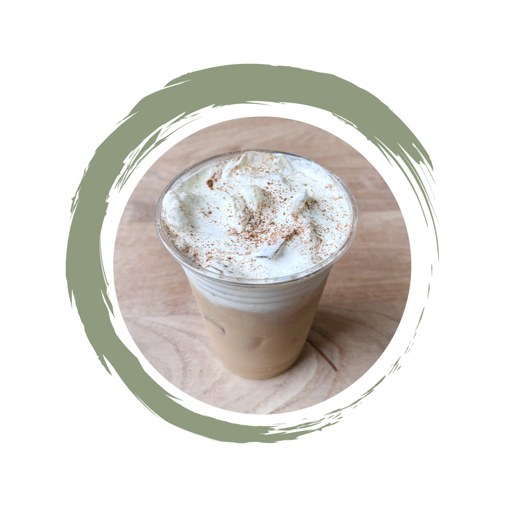
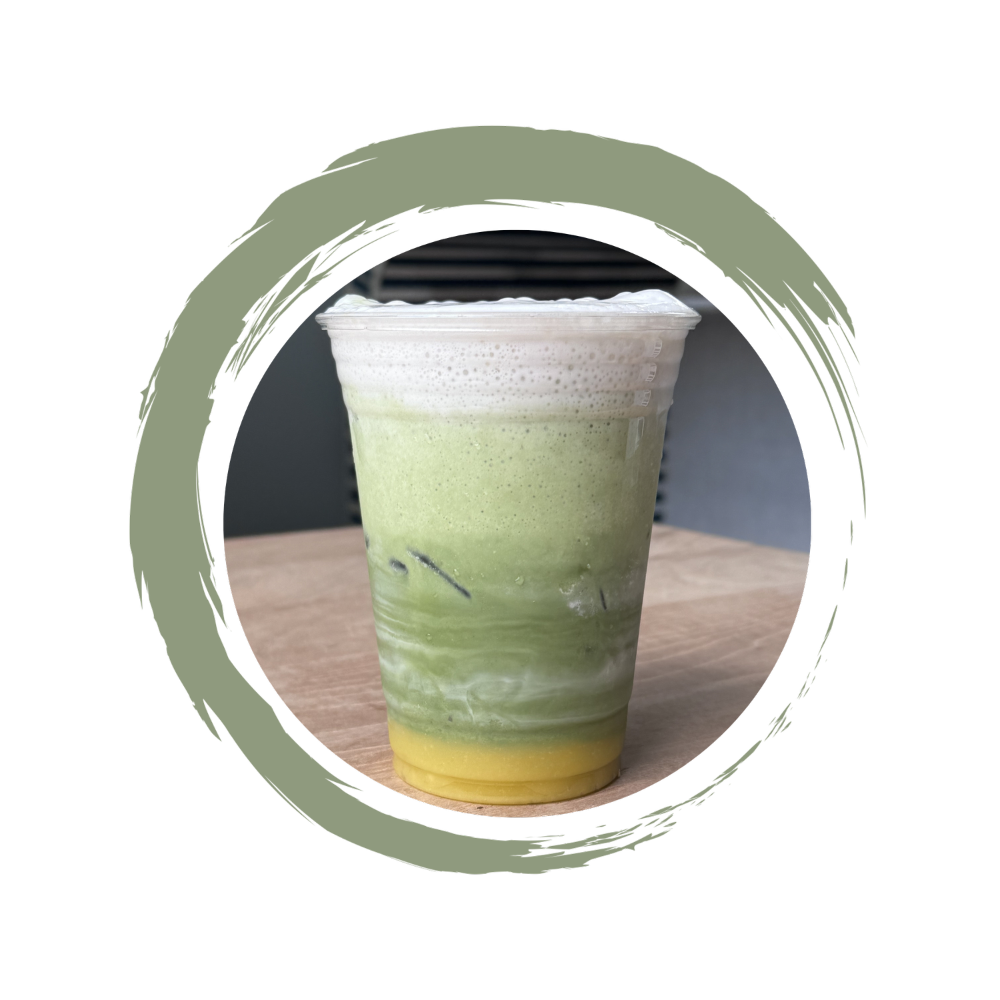

Coffee bar
Something cozy
Latte · cappuccino · cortado · mocha · cold brew
House-made syrups availableCoffee · smoothies · feel-good food
Clean, gluten-free and seed oil-free food and drinks—made with thoughtful ingredients in the heart of Fairfield.

01 · A clean slate
After years of serving Fairfield as Catch a Healthy Habit, this local cafe began a new chapter on Sherman Street—expanding its menu while keeping clean ingredients and community at the center.
Come by for a quick coffee, a colorful smoothie, a relaxed lunch or something nourishing to take on the go.
03 · A little menu magic
Choose your vibe and we’ll suggest a Clean Slate pairing.
Your pairing
There’s a feel-good order waiting for you.
04 · Come say hi
Hours
Monday–Friday · 8am–4pm
Saturday–Sunday · 9am–3pm
Call
Fresh drinks.
Clean bites.
Good company.